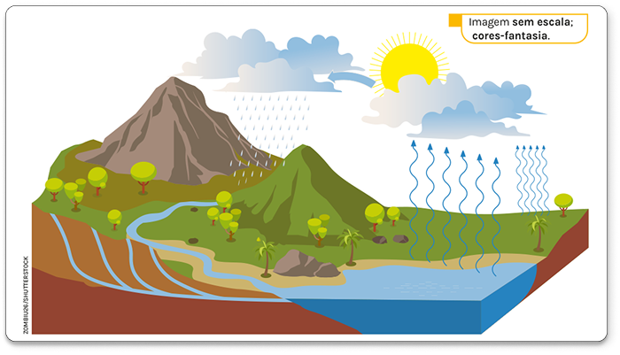

CHECK-IN
Desde os primórdios da civilização, a humanidade sentiu a necessidade de desenvolver ferramentas para resolver problemas práticos do dia a dia, como medir terras ou prever colheitas. Dentre essas ferramentas, surgiram as equações, fundamentais para descrever e resolver situações envolvendo incógnitas. O expoente de uma incógnita, como o x, desempenha um papel importante na classificação dessas equações. Na imagem desta abertura podemos ver algumas equações.
- Como saber quando uma equação é do segundo grau?
- Você sabe como resolver uma equação como essa?
- identificar e resolver equações do 2º grau incompletas e completas;
- utilizar diferentes métodos para resolução de equações do 2º grau;
- analisar o discriminante de uma equação do 2º grau;
- resolver problemas utilizando equações do 2º grau.

Equações do 2º grau com uma incógnita
No 8º ano houve a introdução do estudo da equação do 2º grau. Agora vamos retomar esse estudo e aprofundá-lo.
Definição de equação do 2º grau com uma incógnita
Equação do 2º grau, ou equação quadrática, com uma incógnita é toda equação do tipo ax2 + bx + c = 0, em que x representa a incógnita e a, b e c são os coeficientes numéricos e representam números reais, com a ≠ 0.

Na forma ax2 + bx + c = 0 temos que:
- a é coeficiente numérico de x2;
- b é coeficiente numérico de x;
- c é denominado termo independente.
Assim, por definição, são exemplos de equações do 2º grau com uma incógnita:
a = 4
b = 0
c = -9
a = 3
b = -5
c = 12
a = -1
b = 3
c = 0
a = - 1 2
b = 11
c = -8
Atividade
- Qual é o tema do poema?
- Sublinhe o trecho do poema que reconhece a importância da água para a reprodução dos seres vivos e a manutenção da vida.
- Como a água absorvida pelas plantas pode passar para outros seres vivos?
-
Use a ilustração a seguir para representar o ciclo da água. Lembre-se de incluir setas e as mudanças
de estado físico: condensação e evaporação.
 Imagem sem escala: cores-fantasia.
- Estudos apontam que a água tratada tem se tornado um recurso cada vez mais escasso. Converse com os colegas sobre os impactos da falta de água para os seres vivos e o que vocês podem fazer para economizar esse recurso.